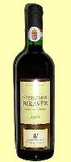
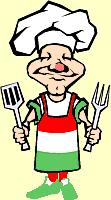
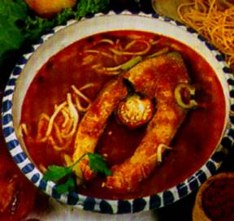

|
|
Es gibt wenige ungarische
Küchenspezialitäten, die man in den Nachbarländern nicht kennt oder
nicht von dort übernommen und danach irgendwie abgewandelt
wären. Es ist sogar historisch belegt, wie und wann etwa die
eingebürgerten Gerichte Ihren Weg in die ungarische Küche fanden.
Die ältesten, ursprünglichen Küchengerichte der Ungarn stammen
sicherlich aus Asien. Türkische Völker, wie Kasachen, Uiguren und sogar die Perser
behaupten von Kesselgulasch, das hätten die Ungarn einst
von ihnen übernommen, als die Ungarn noch mit ihnen zusammen waren. In
der Tat sind es Gerichte, die in Asien gebliebene ungarische Triebe
dort als ihre eigene Küchensspezialitäten betrachten. In späteren
Zeiten sind es überwiegend türkische und deutsche
Küchenspezialitäten, die in den entsprechenden Besatzungszeiten
ihren Weg in die ungarische Küche fanden. Seit der letzten Landnahme
vor mehr als 11 Jahrhunderten wurden laufend neue Küchenrezepte von
den benachbarten slawischsprachigen Völkern übernommen.
|
Vor rd. 900 Jahren wurden im Osten von Ungarn
deutschsprachige Handwerker und Grubenarbeiter angesiedelt in
damals menschenleeren Gegenden. Da sie weitgehend Analphabeten waren,
wie damals die einfache Bevölkerung in ganz Europa, vergaßen sie ihre Herkunft,
jedoch nicht ihre Sprache im Laufe der folgenden Jahrhunderte, weil
diese durch kgl. Garantie für Autonomie bis 1848 nicht angetastet
wurde.
Als ihre Schulbildung etwa ab dem 17. Jahrhundert begann, holten
sie die ersten deutschsprachigen
Lehrer zum Erlernen des Schreibens in
der eigenen Muttersprache. Die ersten dieser Lehrer kamen
aus Sachsen und so hielten sie alles für
sächsisch, was deutschsprachig war. Soviel zur Bezeichnung
der Siebenbürger Sachsen. Ihre Vorfahren
waren in der Tat weitgehend Moselfranken, aber das konnte erst neulich
von Historikern nachgewiesen werden. Die Küche der Siebenbürger
Sachsen ist schon eigenartig. Inwieweit sie in die Historie
zurückgeht oder erst in den letzten Jahrhunderten aus dem
deutschsprachigen Raum erkoren wurde, das lässt sich heute
bestenfalls bei den einzelnen Rezepten aus dem späten Mittelalter
nachvollziehen.
|
In der Ära von Maria Theresia
begann die zweite große Auswanderungswelle aus dem
deutschsprachigen Raum nach Ungarn, von da an siedelten die sog.
Donauschwaben in die von Türken entvölkerten Regionen Ungarns. Sie
folgten den Ruf ungarischer Landesherren, die vor allem
steuerzahlende Menschen auf ohne Landsleute nichts mit ihren
Ländereien anfangen konnten. Sie brachten ihre Essgewohnheiten und sonstige
Gepflogenheiten mit sich. Donauschwaben und Siebenbürger Sachsen
bildeten einen Großteil der ungarischen Bevölkerung, entsprechend
groß war der Einfluss ihrer Küche an die ungarischen Rezepte. Die Küche der Siebenbürger Sachsen und
der Donauschwaben unterscheidet sich wenig voneinander und ist ein
Bestandteil der ungarischen Küche geworden. Die Unterschiede zwischen der Küche der
trotz Vertreibung gebliebenen, heute
weitgehend assimilierten Einwanderer und der Ungarn sind kaum noch zu
erkennen. Fast alle Gerichte
sind beiden Völkern bekannt, ähnlich oder gleich.
|
Etwa zur gleichen Zeit mit den Anfängen der Loslösung von
Österreich in der zweiten Hälfte des 19. Jahrhunderts folgte die
masssenhafte Einwanderung der aus Galizien vertriebenen Juden. Zunächst brachten sie Küchenrezepte mit
sich, die von den Ungarn abwertend als Produkte einer Armenküche
angesehen und daher ablehnend betrachtet wurden, wie z.B. Salonbeuscherl
(Peisli auf Ungarisch) oder Kuttengulasch. Es gab aber schon lange
eine jüdische Minderheit weit zerstreut in Ungarn, die schon immer
etwas weiterentwickelt, jedoch ziemlich isoliert unter sich lebte.
Die massenhaft eingewanderten Neubürger übernahmen vieles aus der
qualitativ wesentlich höher ansehlichen Küche der bereits
angestammten Juden und vieles davon fand allmählich ihren Weg in die
ungarische Küche. So sind heute Gänseleber (gemeint ist Stopfleber), Schalet und Flódni (eine
Nuss-Mohn-Torte) feste Bestandteile der ungarischen Küche.
|
Die bisher letzten Küchenspezialitäten, die während der
Sowjetherrschaft Bestandteil der ungarischen Küche geworden sind,
sind meist Konditoreiprodukte, wie Eistorten, kalte Salate und
Gemüse mit Majonnaise, die man in Europa zwar als französch
betrachtet, in der Tat sind es aber Spezialitäten aus Sibirien.
Sogar das Maronenpürée hat seinen Ursprung in den Kaukasen und
weiter in Sibirien, auch wenn
es über einen großen Umweg Anfang des 19. Jahrhunderts seinen Weg nach
Ungarn fand. Maroniröster unter den nach Ungarn geflüchteten
italienischen Freiheitskämpfern brachten es ins Land der Magyaren.
Marco Polo soll es einst nach Italien gebracht haben.
Während der roten Besatzungszeit übernahmen die Ungarn nicht die
gleichen Küchenprodukte aus den Sowjetländern, wie die Ostdeutschen.
Wenn schon arm, ganz so arm waren die Ungarn in der Nachkriegszeit
nie, wie die Sowjetvölker selbst, auch wenn der als Offizier der
Sowjetarmee nach Ungarn eimarschierte Imre Nagy bis zuletzt im Jahre 1956 dafür
sorgte, dass die Ukraine soviel Lebensmittel wie möglich aus Ungarn
bekam. Vor allem Fleisch war damals Mangelware in der Ukraine,
dementsprechend leer waren die Regale der ungarischen Metzgerläden.
Die folgenden zwei Gemüsesuppen
spielen eine kaum beachtete Rolle in den ungarischen Rezeptbüchern,
umso mehr in der ostdeutschen Literatur. Sie sind eher nur noch
Nostalgie für die einst in der Sowjetunion tätigen Parteibonzen.
|
|
|
Die Ukraine ist benachbart mit Ungarn und diese zwei Briefmarken
aus der Ukraine zeigen die in Ungarn
bekannten Gemüsesuppen aus den sowjetischen
Besatzungszeiten, die Krautsuppe Schtschi und
Borschtsch, die Suppe mit Rote Bete. Die Zutaten sind auf
den jeweiligen Briefmarken besser ersichtlich nach einem Klick
auf die Bilder.
|
|
Die Küche ist schon lange international. Je länger der
Frieden und das deutsche Reisefieber dauert, umso
entfernter Landesspezialitäten gelangen in die heimische Küche.
Die Küchen zweier, historisch schon lange verbundenen Länder, wie
Ungarn und Deutschland können nicht viel voneinander
abweichen.
Wir wollen hier nur die
Rezepte solcher Landesspezialitäten der Ungarn zeigen, die man in Deutschland
kaum oder anders kennt.
Es gibt viele Unterschiede, aber diese sind gering. Die
wichtigsten Unterschiede:
|
- Die Schlachter
in Deutschland zerlegen das Tier weitgehend nach wirtschaftlichen
Gesichtspunkten, produzieren soviel Filet und Schinken, wie möglich und so
bleibt für Gulasch meistens nur der "Rest" übrig. Wie
wirtschaftlich und dabei kaum verbraucherorientiert gedacht wird, sieht man am Beispiel Hackfleisch,
das man immer öfter nur noch verpackt bekommt. Wir wollen hier
nicht verraten, bei welchen deutschen Lebensmittelketten die Galle
ins Schweinehack bzw. Farschiertes gemischt wird - seit vielen Jahren. Der
ungarische Metzger arbeitet vielmehr dem Verwendungszweck
entsprechend und mischt nicht nur aus der Keule, sondern je nach
Kundenwunsch auch vom Filet zum Gulasch und das Hackfleisch wird
auf Wunsch aus ausgesuchten Stücken direkt beim Kauf durch den
Wolf gedreht.
- Ein anderer Gesichtspunkt ist der Geschmack, der
durch Gewohnheiten in verschiedenen Ländern auch noch regional unterschiedlich
geprägt wird.
- Milchprodukte - Mit 3% Fettanteil bezeichnet
man die Milch in Deutschland als Vollmilch, obwohl der
ursprüngliche Fettanteil im Kuhstall noch 3,6 bis 4,4% beträgt.
Wen wundert es dann noch, wenn fast alle Milchprodukte hierzulande nur
noch wässrig schmecken und erst durch Zugabe von
Geschmackverstärkern und Aromastoffen Konsumenten finden. Geldgier
macht erfinderisch, so wird Joghurt sogar aus Fischköpfen
hergestellt. Besonders geschmackslos ist der deutsche Hüttenkäse.
Einige ungarische Spezialitäten werden in Sauerrahm gekocht
oder mit Sauerrahm gebunden. Wenn schon der Sauerrahm wässrig ist,
dann fehlt das Wesentliche aus dem fertigen Gericht, nämlich
der Geschmack...
- Wo in Deutschland Salz und Pfeffer verwendet wird,
benutzt man in Ungarn Salz und Paprikapulver - nicht überall, nicht immer, aber
oft. Paprikapulver wurde allerdings erst vor rd. 100 Jahren in die
ungarischen Kochrezepte gemogelt - von einem Paprikamühlenbesitzer.
Diesen Unterschied sollen die folgenden zwei Bilder
verdeutlichen. Von Paprika und nicht von Farbstoff ist die
ungarische Bratwurst meistens so rot:
|
|
Bild rechts: Das sog.
Paprikahaus auf der Halbinsel Tihany am Plattensee zeigt die
Grundelemente der ungarischen Küche, wie Paprika, Knoblauch,
sehr viel Gemüse, Obst und Wein. Vor allem Knoblauch sollte
man bei der Zubereitung von allen Fleischgerichten nicht
vergessen, weil nach einer Sage aus den östlichen Landesteilen
"Fleisch ohne Knoblauch eine Beleidigung für die Seele des
Tieres ist, das man gerade isst". Knobi ist sowieso eine gute
Vorbeugemaßnahme gegen Verkalkung und Infarkt, sagt man in der
Werbung und dieser Slogan löst einen Kaufrausch aus - meistens dann,
wenn es schon zu spät ist... - Ein Klick auf das Bild rechts
lohnt sich! |
 |
 |
Die ersten handgeschriebenen Rezepte mit ungarischen
Landesgerichten waren Fischrezepte und sie entstammen aus
den Pusztagebieten entlang des Theiss Flusses und stammen
aus dem 12. Jahrhundert. Man vermutet, dass diese Schriften
einen sehr alten Ursprung mit langer Küchentradition
wiederspiegeln. Das erste in Kolozsvár bzw. Clausenburg im
damaligen Ungarn auf Ungarisch gedruckte Buch mit
Kochrezepten stammt aus dem Jahr 1695 mit dem Titel "Szakáts
mesterségnek könyvecskéje", übersetzt: Büchlein der
Kochkunst. - Die Bilder rechts und links zeigen, was in
Ungarn in allen häuslichen Gärten wächst: Tomate und
Paprika. |
|
|
|
Die Kultivierung beider Gemüsesorten
erreichte ihren Höhepunkt in der sozialistischen Ära, als
weite Teile eines ausgehungerten Volkes nur noch Tomate und
Paprika zum Schmalzbrot leisten konnte, gleichzeitig den Westtouristen
in Glanzbroschüren Gulaschkommunismus vorgegaukelt wurde.
Franz Josef Strauss aus Bayern war in dieser Zeit vom
Gulaschkommunismus besonders begeistert, weil im Gemencer
Wald an der südlichen Donau ihm kapitale Hirsche in Hülle
und Fülle vor die Büchse getrieben und auf sein Jagdglück in
einer Reihe mit den Parteichefs aus dem gesamten Ostblock
ein Hirsch tot nach dem anderen zum Aprikosenschnaps posaun
wurde. In der Schorfsheide (Heimat und Jagdrevier von
Herrmann Göring) war er bekanntlich Dauergast bei Erich
Honecker und auch in
Rumänien beim großen Conducator (=Führer) Nikolai Causescu durfte er
auf Bären schießen, nachdem diese auf der Waage als ideale
Beute für ihn maßgeschneidert befunden wurden. |
| Für sein
Jagdglück vermittelte Franz Josef Strauss Kredite im
Ostblock am laufenden Band und konservierte damit die
sozialistische Elend der Bevölkerung länger und länger...
Erst als er auf der Jagd im Jahre 1988 zusammenbrach,
fiel auf, dass es im Ostblock ohne Finanzhilfen nicht mehr weiterging. Nur
ein Jahr später kam die politische Wende nach der Perestroika
(Aufklärung der Bevölkerung)
als logische Folge von Gulaschkommunismus auf Pump.
Wieviel Leid er dadurch den Siebenbürger Sachsen angetan
hat, wieviele deutsche Familien er auseinander riss, als er
von dort die jüngeren, besser gebildeten Arbeitskräfte
freikaufte, darüber spricht man auch heute noch nicht. Aber
auch darüber spricht man nicht, wieviele korrupte
Regierungen heute aus Brüssel und anderen Quellen
unterhalten werden - noch nicht... |
|
 |
Tomate und Paprika stammen aus Südamerika. Paprika kam auf dem Schiff von Kolumbus im Jahre
1494 nach Europa und hieß zuerst Spanischer Pfeffer. Der Schiffsarzt Diego Chanca brachte ihn
mit, heute kennen wir beide Pflanzen in allen
Farbvariationen, ja sogar schwarz. Die erste schriftliche Nachricht über die Kultivierung
von Paprika in Ungarn stammt aus dem Jahr 1570. Im Garten
der Margit Széchy wurde Gewürzpaprika (Bild rechts) angebaut
- sie war die Ziehmutter des Landeshelden Miklós Zrinyi, der
als kroatischer Graf bei der Verteidigung seiner Burg im
Jahre 1566 gegen die Türken fiel und so für Ungarn starb. In
den folgenden drei Jahrhunderten wurden unzählige
Paprikasorten als Gewürzmittel gezüchtet.
Das
Wort Paprika war Mitte des 19. Jahrhunderts in Nordamerika
weitgehend unbekannt, es
setzt sich nun im Übersee allmählich durch, wobei das Pulver
daraus im Übersee der Schärfe nach weiterhin hot oder sweet
und der Farbe nach red, white oder black pepper heißt. |
 |
Das Wort Paprika ist Sprachwissenschaftlern zufolge
entweder ungarisch oder serbisch, aber sicher ist das nicht,
kann auch bulgarisch sein, denn: ab Ende des 18.
Jahrhunderts flüchteten viele Bulgaren
vor den erneut westlich rückenden Türken. Mit ihnen kamen
viele Gemüsebauer nach Ungarn und sie brachten einige
knollenförmige Sorten (Varna und Kalinko, Bild rechts) mit.
Bis Ende des 18. Jahrhunderts war Paprika in der ungarischen
Küche weitgehend unbekannt. Noch in den 1950er Jahren wurde Paprika in Ungarn weitgehend von
den zugereisten Bulgaren (bulgárkertészek) kultiviert und dort
verzehrt, wo sich diese ansiedelten: in der südöstlichen Puszta,
in einem großen Umkreis um die Städte
und
Kalocsa.
|
 |
Das ist ein Gebiet, wo auch heute
noch viele Serben leben. Der berühmteste unter ihnen ist
wohl der zweisprachig aufgewachsene Nationaldichter der
Ungarn, Sándor Petőfi, der seinen
Künstlernamen Petőfi für sich
erst im Jahre 1842 erkor, aber bis zuletzt fast alles unter
seinem ersten Künstlernamen als Pönögei Kis Pál
veröffentlichte, amtlich jedoch immer Alexander Petrovic hieß. So ist er
im Jahre 1859 in einem sibirischen Gulag gestorben, wo seine
Raucherlunge die schwere
Arbeit in einer Kohlengrube nicht ertrug. Leider wollen die
Ungarn das auch heute noch nicht wahr haben, auch wenn die
Umstände seines Ablebens
peinlich genau schriftlich dokumentiert wurde. Dort hat er
sogar als Bigamist nochmals geheiratet und so einen
weiteren Sohn zu verantworten - von seiner zweiten,
russischen Frau, die ebenso wohlhabend gewesen sein soll,
wie seine erste in Ungarn.
Fakt ist, seine Erben fürchten die Magie eines Kriegshelden zu
verlieren, die aus Copyright Gründen auch heute noch für
einen großen literarischen Erfolg und damit für Einnahmen sorgt. Die
Ungarn sprechen ihm stattdessen einen Heldentod in einer
Schlacht gegen die Zarentruppen Ende Juli 1849 zu, wo er in
der Tat verschwand - wie wir es heute wissen - in Richtung
Sibirien. Es
gefällt den Ungarn auch nicht und viele wollen es auch heute
noch nicht hören, dass sein berühmtester Vers "Talpra
Magyar", den er ca. drei Tage lang schrieb, am 15. März
1848 frühmorgens auf Anraten seiner um zwei Jahre jüngeren Dichterkollegen
vollkommen strich und das, womit er die Herzen der Ungarn
traf und so eine ganze Nation gegen die Habsburger
Herrscherhaus hetzte, ein anderer Dichter, Mór Jókai ihm
innerhalb weniger Minuten diktierte, bevor der
Demonstrationszug durch die Straßen von Pest zum
Nationalmuseum zog, wo Petőfi
seine Zuhörer mit "seiner" Dichtung zum Aufstand gegen die
Besatzungsmacht Österreich beipflichtete.
|
|
|
Gemüsepaprika und Paprikapulver für
Speisezwecke waren in Österreich lange, in Ungarn bis
Ende des 19. Jahrhunderts noch länger unbekannt. János Kotányi,
ein mit den
Bulgaren gleichzeitig zugereister Paprikamühlenbesitzer aus
Szeged
begann seine Werbekampagne, indem er
ungarische Kochrezepte mit Paprikapulver bereicherte und sie auf
kostenlosen Werbezetteln publizierte. Der Pfeffer wurde
dabei mehr oder weniger durch unterschiedlich scharfes
Paprikapulver ersetzt. Als sein Umsatz stieg, zog der
Rezeptfälscher nach
Wien und begann auch dort mit der Herausgabe von
österreichischen Rezeptheften, indem er auch den Österreichern viel Paprikapulver unterjubelte. |
Kotányi war in Wien schnell zum Großhändler
von Gewürzen aller Art emporgestiegen. So unterwandelte er die
österreichischen Kochrezepte auf seinen Werbezetteln nicht nur mit
Paprikapulver, sie sind auch heute
noch relativ original, enthalten aber Unmengen von Gewürzen, die vor Kotányis Wirken
kaum oder nur frisch vom Gemüsemarkt verwendet wurden, wenn
man keinen eigenen Garten hatte. Auch
wenn ungarische Touristikbroschüren Unmengen von Paprika
suggerieren, die tatsächlich ungarische Küche ist auch heute
noch weitgehend frei von Paprika. Nur wenn Ungarn - vor allem
im Ausland - angeben wollen, dann strahlt ein
jeder von Paprika. Gemeint sind aber vor allem die Paprikaschoten und Tomaten,
die man gerne zum Schmalzbrot isst. Vor allem bei den
Gulaschgerichten fand Paprikapulver viele Anhänger. Wenn heute in
der Puszta verschiedene Koch- oder wurstproduzierende
Wettbewerbe stattfinden, dann steht gewerbsmäßige Werbung und nicht die
tatsächlich ungarische Küche im Hintergrund solcher
Veranstaltungen.
Eigentlich selten, aber wenn
schon mit Paprika gewürzt wird, dann sollte man bei allen Paprikagerichten eine
50-50%ige Mischung von rosenscharfem und edelsüßem
Paprikapulver verwenden. So steht es handschriftlich in der
Küchenbibel meiner Uroma aus dem Jahr 1905. Demnach sollte man
unbedingt auf die Wörter
rosenscharf und edelsüß achten. Gewürzpaprika ist ein
neuer, völlig undefinierter Begriff des Handels schon seit der Einbürgerung
von Paprika in Europa
und öffnet die Türen für laufend neue Paprikamischungen, die
der Handel gerade verkaufen will. Rosenscharfer Paprika wird leider immer mehr
gefälscht, weil der Anbau dieser Sorte kostenaufwendiger ist.
Auch beim edelsüßem Paprikapulver besteht ein gewaltiger
Qualitätsunterschied zur Ware, die man in Deutschland bei den
meisten Discountern bekommt.
Der Duft der verschiedenen Paprikapulver aus Szeged oder
Kalocsa überzeugt darüber einen jeden.
|
Paprikaland Ungarn?
Genauso, wie man hierzulande in der deutschen Küche Salz und
Pfeffer verwendet, würzt man in Ungarn mit Salz
und Paprika.
- Irgendwie stimmt das schon, aber viel weniger, als in der Werbung!
In östlichen und nördlichen Teilen von Ungarn ist Paprika
meistens nur in Restaurants bekannt, wo zugereiste Köche
beschäftigt werden.
Wenn es um die Qualität geht, gibt es zwei berühmte
Anbaugebiete:
Anbaugebiet Kalocsa: Ursprünglich vom
edelsüßen Paprikapulver berühmt, heute wird auch scharfes Zeug
in bester Qualität
produziert. Der
liefert nur in Ungarn.
Anbaugebiet Szeged: Ursprünglich vom scharfen
Paprikapulver berühmt, produziert die
heute auch andere Sorten in bester
Qualität. Ins Ausland liefert ihr Webshop leider nur an REWE
und Co. Der Ungarn-Tourist kann jedoch die frischeste Ware in
bester Qualität bestellen und/oder dort das Paprikamuseum
besuchen. Die nächste berühmte
befindet sich nur 12 km weiter südlich im
Nachbarort Röszke an der serbischen Grenze. Auch dort gibt es
ein Paprikamuseum.
|
|
Das beste Paprikapulver bekommt man im deutschsprachigen Raum nach unseren Erkenntnissen
bei den besten Gewürzfirmen
,
,
,
,
, aber auch bei Aldi & Co. Wer das nicht glaubt,
ist selber Schuld und sollte sein Paprikapulver in Budapest
kaufen. Vom Eingang rechts in der großen Markthalle gibt es
eine Reihe von Kleinläden, die davon leben, Touristen den
Himmel auf Erden aufzuschwätzen, als würden Sie nicht das
gleiche verkaufen, was man auch in den Regalen ungarischer
Supermärkte findet.
|
|
Vor dem Umbau der Markthalle bis in den
1980er Jahren gab es hier noch viele Marktstände, die nur eigene
landwirtschaftliche Produkte verkauften, heute sind es
betuchte Händler, die nach dem Umbau der Markthalle die neuen,
horrenden Standgebühren bezahlen konnten und genauso im
Großmarkt einkaufen, wie Aldi & Co. Früher schrieb man auf
die Aldi-Packung, dass sie aus Ungarn ist, heute kann das
Paprikapulver auch aus anderen Ländern kommen, die Qualität
und Bezeichnung als "rosenscharf" und "edelsüß" stimmen nur noch selten
überein. |
|
|
Es gibt aber zwei grundlegende Unterschiede: Preis und
Qualität. Paprikapulver kostet im deutschen Supermarkt etwa ab
70 Cent für 50 Gramm, gleich große Packung bekommt man in der
Markthalle etwa ab vier Euro. In der zentralen Markthalle
von Budapest bezahlt man bis zu zehnmal soviel für die gleiche Menge
Paprikapulver in weniger praktischen Schmuckdosen aus Blech
oder Porzellan, die mit Landesmotiven protzen. Dafür bekommt
man unübertroffen gute Qualität und Frische in den Protzdosen,
die für den landestypischen Geschmack der Gerichte
unerlässlich sind. Wir präsentieren die Rezepte dafür auf
den folgenden Seiten. |
|
|
DIE UNGARISCHE KÜCHE bietet vor allem einfache und
sättigende Gerichte, die mit Paprika, Zwiebeln und Tomaten
zubereitet werden. Das Essen in Ungarn ist fett, schwer, aber auch
vitaminreich. Zur ungarischen Küche gehört nun mal das Schmalz.
Als Geschmacksträger bringt es die Zwiebeln und den Paprika zur
Geltung. Damit muss man einfach leben, wenn man den Urlaub in
Budapest verbringt. Mit Köpfchen bringt das bestimmte Vorteile.
Für die notwendige Kalorienmenge benötigt der Körper weniger
Belastung, weniger Zeit im Restaurant und man hat mehr vom Urlaub.
|
 |
Fett ist bisher das einzig bekannte
Lebensmittel, das Wirkstoffe für die natürliche, körpereigene
Bekämpfung von Krebs enthält, es ist daher gesund. Niemand
sagt, dass man viel davon essen muss, wenn es schmeckt. Schmalz, Paprika, Zwiebeln und Knoblauch verleihen die
originelle Geschmacksnote der ungarischen Küche - lt. Werbung
- und das gilt sicherlich für die Gulaschgerichte. Schmalz kann
man zwar durch Speiseöl ersetzen, aber vom Geschmack fehlt
dann etwas!
|
 |
| |
Auf tierisches Fett kann der
menschliche Körper nicht ohne Schaden verzichten. Erwiesen
ist bereits, dass das Kinderhirn sich nur teilweise
entwickelt und schrumpft durch vegetarische Ernährung. Ob
und welchen Schaden Erwachsenenhirn durch Fleischverzicht
erleidet, mögen Wissenschaftler bisher noch nicht
veröffentlichen.
Nach soviel Einleitung zeigen
wir nun das in Deutschland kaum bekannte Rezept eines
einfachen ungarischen Gerichtes mit viel Paprika, das die Augen öffnen soll für eigene Anregungen mit Paprika in der
Küche. Kein Gulasch, aber dieses Grundrezept vermittelt das
Grundwissen und ein
Kochschema für alle
und . |
| |
| |
|
Kartoffelpaprikasch / Krumplipaprikás
|
|
|
|
Dieses Rezept zeigen wir Kochanfängern und anderen, die die
ungarische Küche in den eigenen vier Wänden zumindest ein
bisschen, aber richtig kennenlernen wollen. Ob "Krumplipaprikás"
oder "Paprikás krumpli" der richtige Name für dieses Gericht
ist und welche der beiden Bezeichnungen öfter ausgesprochen
wird, das wissen die Ungarn selbst nicht - beide
Bezeichnungen gelten für das hier beschriebene Gericht ohne
Unterschied - die ungarische Grammatik macht es möglich.
Nur dem Fachmann fällt ein wichtiger Unterschied auf: es
handelt sich hier nicht um ein Paprikaschgericht, das mit
Sauerrahm abgerundet wird, sondern um eine Kartoffelsuppe
mit viel Paprikapulver, das evtl. beim Kochen aus einer
paprikareichen Hartwurst in die Suppe übergeht. |
 |
Die Wurst ist die wichtigste, geschmacksgebende Komponente
dieser Suppe. Ideal ist die "Gyulaer Wurst", die
relativ wenig Paprika enthält, umso mehr wegen ihrer vielseitegen
Geschmackrichtung beliebt ist. Gut geeignet ist auch die
Debrecziner Wurst. Gemeint ist die Frischwurst "Debreceni páros", die
in Deutschland bestenfalls bei wenigen ungarischen
Metzgern, oft erst auf Bestellung erhältlich ist. Diese ist nicht im geringsten gemeinsam mit dem in Deutschland beim Rewe Konzern erhältlichen, ebenfall als Debrecziner
bezeichneten Würstchen, in dem das scharfe Paprikapulver
etwas Ungarisches suggerieren soll, de facto jedoch die
Ungenießbarkeit dieser billigen Rewe-Spezialität übertönt -
pfui deibel... Als Notlösung in Deutschland eignet sich auch
Kabanossi und wenig Paprikapulver für diese Suppe.
Beim Krumpli handelt es sich um eine Bezeichnung für
Kartoffel, die in ganz Ungarn, aber im deutschsprachigem
Raum nur im Saarland und im Nordwesten der Schweiz in
einigen, sehr wenigen Gemeinden bekannt ist. Es sind
überwiegend Elsässer und Badischer Landschaften, woher die meisten "Donauschwaben"
auswanderten. Sie haben sich freikaufen müssen vom Joch der
Elsässer und Badischer Erbschaftsvorschriften, die den
erstgeborenen Sohn zum Herrn über die Geschwister erkoren.
Das Wort Krumpli stammt aus Krummbeere ab und so ist der
Begriff Kartoffel schon weiter verbreitet vom schwäbisch-,
rheinhessisch-, pfälzischen Raum hinaus bis nach Lothringen.
|
Kartoffelanbau in Ungarn -
Wenn schon Krumpli die ursprüngliche Bezeichnung für
Kartoffel in Ungarn ist, dann stellt sich die Frage, seit
wann ist Kartoffel in Ungarn bekannt? - Gerade im
Auswanderungsgebiet der Donauschwaben war Kartoffel lange
unbekannt und wurde im Schwabenland erst im Jahre 1710 von rebellierenden
Religionsflüchtlingen aus heute norditalienischen Gegenden
eingebürgert. Die ersten Donauschwaben brachten die ersten
Kartoffelknollen nach Ungarn mit sich. So betrachtet kann Kartoffelpaprikasch nicht
besonders lange das Nationalgericht der Ungarn sein.
Kartoffel statt Sellerieknolle -
Bekannt ist, dass die Ungarn lange nichts von Kartoffelanbau
hören wollten und sind darüber erst hinweggekommen, als der
ungekrönte Sohn von Maria Theresia, König Joseph II der
Ungarn, zu Ende des 18. Jahrhunderts mehrere Jahre
Steuerfreiheit gewährte für den Anbau von Kartoffel. - Warum
sich die Bauer gegen den Kartoffelanbau wehrten, darüber
spricht man heute nicht mehr. Tatsache ist, dass die
Sellerieknolle in der Küche früher den gleichen Zweck erfüllte, wie
heute die Kartoffel, die anfänglich noch sehr teuer war. Die
Sellerieknolle schmeckt ähnlich und ist für den gleichen
Zweck zu verwenden, wenn man weiß, wie man sie kocht: in mit
Essig leicht gesäuerter Milch. Essig und Milch gab es damals
immer und praktisch kostenlos auf allen Bauernhöfen - viel
billiger, als heute das Trinkwasser.
|
|
Krumplipaprikás ist in anderen Ländern kaum bekannt, ist
jedoch das wahrscheinlich populärste Nationalgericht in
Ungarn - einfach, schnell und billig auf den Tisch. Die Kenntnis über
die Zubereitung bereitet den Boden für unzählige
und
mit Zwiebel, Tomate und Paprika
vor. Einfacher geht nur noch der
.
Warum gerade Gulasch und manch andere ungarische
Küchengerichte im deutschsprachigen Raum besser bekannt sind,
darüber kann man lange spekulieren. Tatsache ist, dass die
Ungarn und noch mehr die Zugereisten mit Gulasch seit
Jahrzehnten Werbung für die ungarische Küche betreiben. Wie
auch immer, wir zeigen hier das Grundrezept für
Krumplipaprikasch, das in Ungarn schon lange bekannt ist und
die Jugendlichen im Grundschulalter als erstes Gericht
erlernen müssen. Ob auf einem Schulausflug oder im
Pfadfinderkamp im Wald, Hauptsache die Kinder lernen es früh,
wie man Kartoffelpaprikasch in der freien Natur in einem
Kessel zubereitet. Vorher wird bei Mutti am Herd
geübt, dass man sich vor den anderen nicht blamiert... Es ist
wirklich toll, wenn für die Vorführung viele Mütter erst
einmal selbst die Zubereitung erlernen müssen - so populär ist
Paprika im sog. Paprikaland Ungarn! |
 |
Kartoffelpaprikasch - das Rezept:
Das folgende Video zeigt die Zubereitung mit
ungarischer Erklärung, die wir unten auf Deutsch
beschreiben. |
| |
|
|
| |
|
|
Zutaten für 4 Personen: 1 kg Kartoffeln (Krumpli
bzw. Krumbeere), 2 Zwiebeln, 200 Gramm Gyulaer Wurst*, 1
Paprikaschote, 1 Tomate**, 4 TL
Paprikapulver, Salz, Speiseöl (früher kannten die Ungarn nur
Schweineschmalz)
* im Video werden
billige Paprikawurst und Würstchen vorgeführt, weil nach dem
sog. politischen Wechsel die meisten Ungarn nur noch das
leisten können. Für die Entfernung der Wurstpelle wird
empfohlen, vorher die
Wurst in Warmwasser zu spülen. Die Gyulaer Wurst wird jedoch in ihrer essbaren
Hülle in 50 Gramm Stücken (1 Portion) gleichzeitig mit den
Kartoffeln gekocht.
** Etwa
eine große Tomate gehört zum Grundrezept - ob im Video
vergessen, absichtlich nicht gekocht oder gerade nicht zur
Verfügung stand, das wissen wir nicht. Die geschälte und
zerdrückte Tomate wird gleichzeitig mit der
kleingeschnittenen Paprikaschote dazu gemischt.
Zubereitung:
Die Kartoffeln schälen und in Spalten schneiden. Zwiebeln
klein hacken und in heißem Öl oder Schmalz schmoren, Topf
vom Herd nehmen, 4 TL Paprikapulver hinein rühren (nicht auf
der heißen Herdplatte, sonst wird das Paprikapulver bitter -
das ist wichtig bei allen Gerichten mit Paprikapulver),
Paprikaschote und Tomate klein schneiden und dazu mischen.
Geschälte und in Spalten geschnittene Kartoffeln dazugeben
und ddie Zutaten mit Wasser bedecken. 1 TL Salz in die Kochflüssigkeit mischen. Die
Kartoffeln benötigen von nun an ca. 15 Minuten Kochzeit.
Etwa zur Halbzeit wird, wie im Video in Scheieben
geschnittene Paprikawurst oder besser Gyulaer Wurst von
Anfang an in 50
Gramm Stücken mitgekocht.
|
Garnierung:
Im Video wird
zur Garnierung mit Salz, Essig und Zucker so zubereitet, wie
die Ungarn es am liebsten mögen. Er ist ein Durstlöscher,
das Bier nach scharfen Paprikagerichten muss daher nicht
unbedingt sein. Gurkensalat bringt auch an warmen
Sommertagen die Erlösung und wird oft verzehrt, es muss
daher nicht immer eine Eiskrem oder ein Erfrischungsgetränk
sein.
|
 |
Servieren: Krumplipaprikás ist eigentlich eine
scharfe Suppe.
Deswegen stehen Brotkörbchen auf allen Tischen in Ungarn.
Weißbrotscheiben eignen sich am besten gegen die Schärfe.
Nicht jedermanns Sache ist jedoch die Schärfe von Paprika
und wenn Kinder in der Familie sind, dann sowieso und man
kocht dann weniger scharf. Sollte die Suppe nicht
scharf genug sein, stehen getrocknete und zerbrochene
Paprikaschoten, sog. Chiliflocken oder einfach nur Paprikastreuer
am Tisch zum Nachwürzen. Es gehört nicht zu den
Tischmanieren, Kindern verzeiht man dafür, dass sie wenig Sud
mögen und die Kartoffeln mit der Gabel zerquetschen. So
schmeckt Kartoffelpaprikasch nicht nur Kindern am besten, wie am Blid links. |
|
 |
Bei allen von Paprika scharfen Gerichten ist vor dem Essen
im Sommer ein hausgemachter Schnaps, im Winter ein Glas
süßer Tokajer oder ein kräftiger Grauburgunder (Szürkebarát) angesagt. Zum
rotem Fleisch trinkt man bekanntlich Rotwein,
bei weißem Geflügelfleisch und Fisch Weißwein.
Nach dem Essen mundet Erwachsenen ein Bier am besten, sollte
aber dem Autofahrer nicht, denn in Ungarn
gilt ein absolutes Alkoholverbot am Steuer mit Null Toleranz
während der Fahrt. Bier heißt Sör auf Ungarisch und wird als
Schör ausgesprochen. |
 |
|
|  |
Im deutschsprachigem Raum ist
das bekannteste ungarische Küchenprodukt und wird in
Deutschland Gulasch genannt. Das Fleisch dazu schmeckt vom
Metzger und nie aus dem Tiefkühlfach der Supermärkte mit bis
zu 30% Gefrierwasseranteil. Damit kann man das Fleisch kochen,
aber nie anrösten für den Gulaschgeschmack, denn Pörkölt
heisst "Angeröstes" auf Deutsch.
ist eine besondere
Delikatesse aus der feineren ungarischen Küche, es ist weniger
bekannt in Deutschland als in Nordamerika.
wird in der Weihnachtszeit landesweit aufgetischt, es ist eine
Koproduktion der früheren Besatzungsmächte Österreich und
Türkei. Klassiker der häuslichen Küche in Ungarn sind die
Eintopfgerichte, z.B.
(sprich: Letscho), ein fleischloses Gulasch, ein Gericht aus
Zwiebeln, Tomaten, Paprika und als Leckerbissen darin entweder
eine geräucherte Wurst oder ein Rührei. Eine weitere traditionelle
Köstlichkeit ist der Hortobágyer Rostbraten, der mit einem
Grießkloß oder Tarhonya (Eier- oder Nudel-Graupen) und vielen Kräutern auf den
Tisch kommt. Das ist ein Gericht ohne Paprika, dafür aber mit
viel Majoran und Kümmel. |
Túróscsusza isst man in Ungarn öfter als Nachspeise zur
Löschung des Paprikafeuers, es ist aber eine
Vorspeise
und wird in Österreich
oder auch Topfnudeln genannt. Es sind Nudeln mit Sauerrahm
(Saure Sahne in Norddeutschland) und körnigem Hüttenkäse,
begossen mit heiß schwitzenden Grammeln. Letztere sind
ausgelassene, knusprige Speckwürfel. Topfenfleckerln serviert
man ohne Grammeln weniger fett, dann bestreut man sie mit
Rosinen und Puderzucker. Topfenfleckerln lassen sich auch
.
Unter der Bezeichnung
entwickelte man aus der
süßen Variante ein fruchtiges Dessert, das heute in
ungarischen Konditoreien weltweit zu den besonderen
Delikatessen zählt.
|
|
Auch Fische aus den vielen Seen und Teichen des Landes
stehen häufig auf der Speisekarte. Als Delikatesse unter den
Fischen gilt der gegrillte (sprich:
Fogasch), der Zander aus dem Plattensee. Karpfen, Wels und
Stör sind ebenfalls hervorragend. |
 |
|
ist
eine feurige, landestypische Fischsuppe, die traditionell aus mehreren
Fischsorten, viel Zwiebeln und wenig Tomaten zubereitet wird.
Scharfer Paprika sorgt für den landestypischen Geschmack
nach Szegediner Art. |
 |
Als Nachtisch
wird
oft
(=Palatschinken oder Crepes) hochgeschätzt, ein dünner
Pfannkuchen, meistens mit Süßigkeiten gefüllt. Landestypisch
wird der Pfannkuchen mit gemahlenem Walnuss oder Mohn mit
Aprikosenmarmelade oder mit Quark und Rosinen gefüllt. Am
pfiffigsten vorbereitet wird die Gundel-Palatschinke, die mit
Walnüssen und Schokoladensoße gereicht wird
und kulinarisch-künstlich, so ziemlich plastisch auf dem
Teller erscheint. Palacsinta ist eigentlich ein Fingerfood,
wie die Frühlingsrolle in China, wurde aber von den im 19.
Jahrhundert in Ungarn beschäftigten französischen Köchen
soweit eingebürgert, dass viele Ungarn sich einbilden,
Pfannkuchen wäre eine ungarische Erfindung. Dabei ist z.B. die
Gundel-Palatschinken im Nachbarland Kroatien schon viel länger
bekannt als in Ungarn. Dort bezeichnet man sie
"Himmel auf Erden" und sie schmeckt wahrscheinlich noch
besser, weil die Kroaten auch noch aufgeschlagene Sahne in die
Schoko-Walnussfüllung rühren.
Zu Ostern und Weihnachten gehört traditionell
als Nachspeise
immer auf den Festtagstisch.
|
|
Mohnkonsum und Drogen: Nach dem EU-Beitritt
im Jahre 2004 schlug Brüssel Alarm über die Essgewohnheiten
der Ungarn und wollte vieles verbieten. Die Hausschlachtung und auch die mohnhaltigen Speisen sollten
von der Speisekarte der Ungarn verschwinden. Bei der
Hausschlachtung hat sich herausgestellt, dass die Gefahren
dadurch geringer sind, als durch den Verzehr von
vergleichbaren Fleischprodukten in der übrigen EU. Über das
geplante Verbot des ungarischen Mohnkonsums vermutet man,
dass dahinter die Lobbyarbeit des internationalen
Drogenhandels und die Unwissenheit der Brüsseler
Technokraten stand, der durch das Verbot nun schon seit
Jahrzehnten (in Deutschland seit 1974) enorme Gewinne
erzielt, wie einst der Alkoholhandel während der Prohibition
in den USA. Damals sollte die Bevölkerung moralisch und
körperlich gesunden, doch stattdessen florierte das
organisierte Verbrechen. Leidtragende sind
heute vor allem Krebspatienten in der Endphase, die auf
schmerzmildernden Opiate angewiesen sind, aber diese nicht bezahlen können.
Auch die Konsumenten leiden, weil sie einerseits vom
Gesetzgeber zu Kriminellen gestempelt werden, andererseits
nicht zweifelsfrei wissen, was sie an einem von den
Drogenbossen regierten Schwarzmarkt kaufen. |
 |
Die EU-Regelung betrifft nicht den Verzehr von Mohnkörnern.
Die Mohnkapseln enthalten zwar Opiate, aber in sehr geringen
Mengen. Für die Herstellung einer einzigen Dosis des
Rauschmittels benötigte man eine Lkw-Ladung von den Kapseln,
sodass die Produktion daraus auch bei den durch das
Verbot lukrativ gewordenen Drogenpreisen eine sinnlose
Tätigkeit wäre. In früheren Zeiten kochten die Mütter aus
einem Eimer Mohnkapseln etwa 1 Liter Tee für die Kinder bei
Schlafstörungen.
Mohn enthält einige
B-Vitamine und ist reich an Mineralien. Ob als
oder in diversen
,
Mohn sollte immer frisch - im Erntejahr! - gemahlen werden.
Es reicht nicht, den Mohn durch die Mühle zu jagen. Bei der
Wahl des Mahlgrades sollte das "Produkt" ölig glänzen. Da
gemahlener Mohn in luftdichter Verpackung schnell ranzig
wird, wird er meist nur zerquetscht und als "gemahlen"
angeboten. Das schmeckt noch lange nicht in Kuchen oder auf
den Mohnfleckerln.
Das Mohnöl spielt
eine Rolle bei der Heilung (!) von Osteoporöse. Von Medizinern
wurde eine Heilung nachgewiesen beim Verbrauch von einem
Liter pro Jahr und das kann die Krankenkassen entlasten.
- Die moderne Pharmaindustrie ist allerdings unglücklich
über solche Erkenntnisse. |
|
Herzsalami
ist eine alte Marke aus der Fleischwarenfabrik der Gebrüder
Herz, die in der Nachkriegszeit verstaatlicht, in Staatl.
Schlachthof umbenannt und im Rahmen von sog. Entschädigung von
unrechtmäßig enteigneten Privatgütern über dunkle Kanäle in
neue Hände "reprivatisiert" wurde, die nach EU-Subvention für
die Rekonstruktion nur die Pleite hinterließen. Seit kurzer
Zeit gehört der Schlachthof von Budapest der Konkurrenzfirma
Pick aus Szeged, die sich momentan in Ungarn als Retter eines
traditionell guten Markenproduktes brüskiert.
Die Herzsalami war für Feinschmecker gedacht im Gegensatz zur
paprikareichen, z.T. brutal scharfgewürzten und versalzenen
aus Szeged. Früher benötigten beide Salamis lange Reifezeiten
bei der Lufttrocknung. So waren sie seit Produktionsbeginn vor
rd. 150 Jahren einige Jahre lang lagerungsfähig auch in der
sengenden Sonne, durften jedoch nie auf Kühlschranktemperatur
gebracht werden, denn in der Kälte schlägt das überreichlich
verabreichte Salz aus und der Geschmack vergeht bereits nach
wenigen Tagen, so auch schon in den Kühltransportern auf dem
Weg nach Deutschland. So war das noch vor kurzer Zeit, bevor
die EU-Verordnung zur Lagerung von Wurstwaren in den
Lebensmittelgeschäften den Geschmack der ungarischen Salami
verdarb. Auch das üppig verwendete Nitritpökelsalz und die
damit verbundenen Gesundheitswarnungen in den Medien trugen
zum starken Konsumrückgang bei. All das hat die Hersteller
offensichtlich auf die Palme getrieben und sie haben mit der
Einführung neuester Markennamen mit neuesten
Geschmacksrichtungen offensichtlich das Produktionsverfahren
und auch die Rezepturen geändert. |
|
Leider muss man die deutschen Wörter öfter interpretieren,
damit sie alle im gesamten deutschsprachigen Raum verstanden
werden. So z.B. kommt es hier und da öfter vor, dass man von
seiner Frau eigentlich lieb gemeint als Macker bezeichnet
wird. Es ist schon logisch, wahrscheinlich nicht zufällig wird
der Mann von seiner Frau "mein Macker" genannt und nicht
umgekehrt. Der Macker war nun mal in der Sprache vorhanden,
als es im deutschsprachigen Raum noch viele Macker gab. Macker
bedeutet nämlich kastrierten Esel und Mackerfleisch war
ursprünglich der wichtigste Geschmack gebende Komponente in
der ungarischen Salami, als man kurz vor der 19./20.
Jahrhundertwende das ursprüngliche Salamirezept entwickelte.
Damals wurden die Dampf- und elektrisch betriebenen Maschinen
eingeführt und sie ersetzten die lasttragenden Macker und
Maultiere, deren Fleisch damals in Unmengen vorhanden und
daher am billigsten war. Noch in den 1970er Jahren mischte man
Rinds- und Schweinefleisch je zur Hälfte in die ungarische .
Damals erlebte die ungarische Salami ihren Höhenflug an
Berühmtheit und Marktabsatz aus einem einfachem Grund: Billig
und trotzdem gut war sie für die Ostblocktouristen, deren
Devisenkontingent extrem eingeschränkt war.
|
In Ungarn hing die Salami in den Fleischerläden direkt vor der
Nase der Kunden in der Luft. Pick- und
Herzsalami konnte man so ohne Kühlung in der häuslichen
Speisekammern jahrelang trocken lagern. In der EU jedoch
musste die Salami laufend gekühlt werden. Bei Kühlung
schrumpft die Salami und das Salz schleicht daraus empor. Nach
ein paar Tagen im Kühlschrank schmeckte die Salami ohne Salz
nicht mehr.
Etwa seit Mitte 2013 schmecken
die Salamiprodukte der Firma Pick auch aus den Kühlregalen.
Dafür steht heute nur noch
eine relativ kurze Haltbarkeit auf den Etiketten. Salami ist
Dauerwurst und was nicht lange hält, ist keine Salami, auch
wenn man das auf die Etiketten schreibt. Was da noch
"original" sein soll, darüber möchten wir nicht spekulieren,
denn die aktuellen Fabrikationshallen heute anderswo sind als
früher und der Begriff "original" sich heute - laut
Werbung - nur noch auf den
Standort der neuen Fabrikationshallen beziehen soll, nicht
jedoch auf die Rezeptur. Da bleibt einem der Atem im Hals
stecken und fragt, wenn schon "original" so hochgeschrieben
wird, dann warum nicht gleich das Original aus Italien, woher
die Salami stammt?
|
Auch heute zählt billig an vorderster Front bei der
Herstellung. Pick-, Herz- und Wintersalami. Sie werden heute
überwiegend aus deutschem Schweinefleisch hergestellt, weil es
im EU-Binnenmarkt am billigsten ist.
erfahren Sie, warum das deutsche
Schweinefleisch am billigsten ist in der EU. Wie das im Detail
möglich ist,
lesen Sie im folgenden
(Download einer PDF-Datei von 2,2 MB), das eine
Antwort auf die Frage ist, warum die seit Jahrhunderten gut
funktionierende ungarische Landwirtschaft mit dem EU-Beitritt
plötzlich auf den Kopf gestellt und von Brüssel fast komplett
in die wirtschaftliche Ruine getrieben werden konnte.
Im ersten Jahrzehnt dieses Jahrtausends gab es fast nur noch
Importware zu kaufen in den ungarischen
Lebensmittelgeschäften. Den Markt beherrschen heute
ausländische Firmenketten, wie Spar, Eurospar, Aldi, Penny, Lidl, Tesco,
Auchan u.a. - ohne Rücksicht auf die einheimische Bevölkerung
und Erzeuger.
Wenn sich die ungarischen Landwirte dafür einsetzen, ihre
Waren auf den einheimischen Markt zu bringen, werden sie aus
bestimmten Richtungen als rechtsextreme Nationalisten sogar
international beschimpft. Der aktuelle Ministerpräsident
Viktor Orbán löste eine korrupte sozialistische Regierung ab,
die alles erdenkliche in ausländische Hände privatisierte, die
der Staat noch besaß. Seit seinem Amtsantritt im Jahre 2010
wird er von allen erdenklichen inländischen und ausländischen
Seiten bombardiert, weil er nicht alles zu schlucken vermag
und sich wehren weiß, zumindest bisher überstand er alle
Korruptionsvorwürfe, die nicht von der Hand zu weisen sind.
Sein Nachbar, ein Klempner "gewinnt" laufend neue
Agrarländereien in Tausender Hektargrößen und bewirtschaftet
dafür diverse Zuchtbetriebe der Familie Orbán und Verwandte.
Sogar ein Fußballstadion mit 4.000 Zuschauerplätzen ließ
Viktor Orbán auf seinem eigenen Feld in einer Ortschft mit rd.
1.500 Einwohnern erbauen. Das und noch viel mehr bringt die EU auf die Palme und das
nächste Opfer steht bereits im Visier der nach Brüssel
gejagten Partei-Hinterbänkler, die Ukraine mit einer
traditionell solide funktionierenden Agrarwirtschaft. Auch sie
sollen in den nächsten Jahrzehnten deutsches Fleisch
importieren und womöglich sogar ihren Wodka aus in den USA
genmanipulierten deutschen und französischen Mais, Weizen und
Kartoffeln mit Gas aus EU-Ländern brennen - wie auch immer.
|
 |
Weniger von Paprika, vielmehr von Salz und Pfeffer bekommt man
Durst, je schärfer gewürzt wird, umso mehr. Viktor Orbán sei
Dank für die Legalisierung des Hausgemachten in Ungarn. Als
die großen Brennereien, vor allem Zwack für ihr, wie auch
immer erschlichenes Monopol in
Brüssel und damit gegen die Zulassung von Hausbrennereien
internationalen Druck aufbauten, bewies der in bestimmten
Medien als konservativ verunglimpfte Reformpolitiker genug
Hartnäckigkeit bei der Durchsetzung dieser Regelung. Heute
darf ein jeder sein Gewerbe anmelden und der Schnaps kommt
meist direkt vom Obsthof. |
Gott sei Dank, denn während die großen Industriebrennereien mit
laufend neuen Geheimrezepturen und sagenhaften Legenden stolzieren,
sollte man schon
wissen dürfen, was mit
den zugedichteten Fabelmärchen vorgegaukelt wird. Beim
Hausgemachten "Házipálinka" weiß man bescheid, von wo der Geist kommt.
|

Barack=Aprikose Pálinka=Schnaps
Aber Vorsicht bei der Frage in Ungarn, ob man ein Barack
haben möchte. Auch die Backpfeife heißt Barack auf
Ungarisch... |
Barackpálinka, der berühmte Schnaps aus der
ungarischen Puszta wird aus Aprikosen hergestellt - immer
öfter in einzelnen Obsthöfen.
Aprikosengeist aus der Puszta wird in der Umgebung von
Kecskemét in großen Mengen produziert, denn die mächtigen
Sandböden und das Klima sind dort ideal für ihren Anbau. Die
Aprikosenreife hat einen kurzen Zeitraum und die Früchte
sind nur konserviert oder als Geist haltbar. Ansonsten
schmecken sie in Kuchen, am besten frisch vom Baum. Der
Aprikosensaft ohne alkoholische Gärung schmeckt gut, löscht
den Durst im Sommer, ist aber wenig beliebt, genauso wie
der Pfirsichsaft. |
 |
UNICUM - Durch Werbung in allen Medien gut
bekannter Magenbitter - mit patentiertem
Geheimrezept. Kenner sind überzeugt, Unicum
sei weltweit der einzige Magenbitter, von dem man keine
Kopfschmerzen bekommt.
Dass man
echt ungarische Speisen nur mit Schweineschmalz kochen kann,
gehört zu den Grundelementen ungarischer Rezepte. Das kommt
der uralten ungarischen Weinkultur entgegen, die bereits zu
Attilas Zeiten bekannt war.
Im Laufe der Zeit änderten sich die Rebsorten zwangsweise,
gemeinsam ist ihnen jedoch, dass sie die schweren
Nationalspeisen der Ungarn hervorragend abrunden. Vor allem
den Aprikosenbranntwein "Barack Pálinka" gibt es so einmalig
nur aus Ungarn. |
 |
|
 |
Bild links:
Ein berühmter Spitzenwein ist der Graumönch aus Badacsony am
.
Bild rechts:
Zu den schweren ungarischen Gulaschgerichten empfiehlt sich Bier oder ,
vor allem Tokajer.
Es war der französische Lebewohl-Sonnenkönig Ludwig XIV.,
der
diesen Ausbruchwein
aus Tokaj zur Königin aller Weine ernannte. Dabei steht der
Begriff Ausbruch (Aszu auf Ungarisch) für die
Herstellungstechnologie. Der neue Wein wird vor Weihnachten
mit den vom Schimmelpilz Botritis befallenen Weintrauben
erneut zur Gärung gebracht und abgewürgt, wenn der
Alkoholgehalt die 16% Marke erreicht. |
|
Rust in Österreich und Tokaj in Ungarn streiten seit
Jahrhunderten über die Erfindung der Ausbruchtechnologie und
auch über die unübertroffene Qualität ihrer Ausbruchweine.
Beide werden aus besonderen, für die besondere Technologie
bewehrte Rebsorten
etwa ab Mitte des 17. Jahrhunderts erzeugt. Vorsicht
daher bei Nachahmern! Wenn man z.B. auf "Kompolter
Ausbruchwein" trifft, dann kann der Wein zwar gute Qualität
haben, wenn die Flasche noch keinen "Stich" hat, aber nicht
die unübertroffene Güte aus Tokaj oder Rust. Kompolt ist der
deutsche Name der Stadt Eger in Ungarn und Eger ist das
Zentrum eines Weinbaugebietes. Nach unseren Erkenntnissen
aufgrund der Verkostung einiger teuer bezahlter Flaschen
Kompolter Ausbruchweine, benutzen Spekulanten den guten
Namen der Stadt für die Versteigerung lang gelagerter
Weine aus unterschiedlichen Rebsorten, die von den
Spekulanten hochgepriesen, nicht
jedoch aus Rebsorten
erzeugt wurden, die für den Ausbruchwein geeignet
sind.
Die bekanntesten unter den ungarischen Weinsorten sind wohl
der Tokajer und die verschiedenen Graumönch Weine (in
Deutschland meistens Ruländer oder Grauburgunder genannt)
aus der Plattensee Region, ferner Muskateller und der
Lindenblattwein "Hárslevelű" von einer besonders süßen
Rebsorte, die ausschließlich in Ungarn wächst.
Während der Tokajer weltweit bekannt ist, weil der
französische Sonnenkönig ihn zur Königin aller Weine
erkor, weniger bekannt ist der
,
weil es davon wenig gibt. Er ist der Hauswein der
Königsfamilien Windsor und Habsburg schon seit
Jahrhunderten, weil er herrlich gut ist und für männlichen
Nachwuchs sorgen soll. Maria Theresia ging nie ohne den
Somlói Juhfark ins Bett und brachte so 16 Kinder zur Welt!
|
Im
Gegensatz zu Frankreich, wo die Massenweine "Chateau" und
die Tafelweine mit Fantasienamen seit Jahrzehnten auf
EU-Handelsnorm getrimmt wurden, haben die Ungarn bereits zu
Attilas Zeiten auf Qualität gesetzt und setzen diese
Tradition heute im eigenen Land konsequent fort. Manch eine
mit Wachs gut versiegelte Flasche Tokajer aus dem 15. und
16. Jahrhundert sind Zeugnisse von höchster Qualität. Was
damals vor den einrückenden Türken in Brunnen versteckt
wurde, findet man gelegentlich noch immer unbeschadet und in
bester Qualität - sagen die Spekulanten vor den Weinversteigerungen.
|
Die ungarische Küche aus historischer Sicht:
Die ungarische Küche ist eine der größten Küchen Europas. Um
das zu verdeutlichen sei hier ein ungarisches Kochbuch aus der
Zeit des Dreißigjährigen Krieges genannt, in dem 189
Fischrezepte beschrieben sind. Die ungarische Küche hat ihren
Ursprung sicherlich in den asiatischen Steppen. Das lässt sich
daraus folgern, dass es eine Reihe von Nationalspeisen in
ähnlicher Form auch in den finnischen und estnischen Küchen zu
finden sind. Dabei haben sich die Wege dieser verwandten
Völker bereits vor rd. 4.000 Jahren getrennt. Attilas Truppen
ernährten sich gut mit Suppenbrühe aus Fleischpulver und waren
damit aus der Heimat langfristig gut versorgt, sodass sie fast
unendlich lang ausholen konnten. Das ist nur ein Beispiel von
Vielen für die natürliche Konservierung von Lebensmitteln, die
man in Europa damals noch nicht kannte.
Vor
allem die Könige aus anderen Ländern haben die ungarischen
Köche beeinflusst. So haben französische und italienische
Köche im Hof bereits im 13. Jahrhundert Einfluss auf die
ungarischen Kochgewohnheiten ausgeübt und später im 19.
Jahrhundert erneut, als die Spitzenköche zahlreicher Nationen
in ungarischen Spitzenrestaurants die Klinken aneinander
weiterreichten. Mit König Matthias bahnte sich die scharfe
Zigeunerküche (aus Indien) ihren Weg bereits im 15.
Jahrhundert nach Ungarn. Seine dritte Frau Beatrix von Aragón
aus Neapel brachte den Ungarn das Tischmanieren mit der Gabel
bei, vorher kannten die Ungarn nur Löffel und Messer. Die
scharfe Küche wurde später von den Türken mit dem edelsüßen
Paprika und weiteren Gewürzen verfeinert, so gehören heute
scharfe und weniger scharfe Gewürze zu den charakteristischen
Elementen ungarischer Kochrezepte.
Im Gegensatz zu
den umgebenden Ländern verwenden die Ungarn viel weniger
Pfeffer. Früher verwendete man statt Pfeffer Bohnenkraut, weil
die ungarische Unterart von Bohnenkraut wie der Pfeffer,
jedoch ohne Schärfe schmeckt und damit den Magen nicht reizt.
Während das ungarische Bohnenkraut ohne Schärfe krautartig
nach Pfeffer schmeckt, ähnelt das deutsche Bohnenkraut einem
Grasgewächs. Pfeffergeschmack, der die Schleimhäute nicht
reizt - der ist heute kaum noch bekannt, weil Pfeffer viel
billiger und einfacher zu verwenden ist. Die ungarische
Bezeichnung Borsikafű für Bohnenkraut entstammt vom Pfeffer ab
(Bors auf Ungarisch). Die in Siebenbürgen lebenden Ungarn
verwenden das Bohnenkraut auch heute noch statt Pfeffer
(nennen es dort jedoch mundartlich Csombor), weil es dort
klimatisch bedingt wie Unkraut am Wegesrand vorkommt und
überall im eigenen Garten kultiviert wird.
|
Praktisch alle Nationen, mit denen die Ungarn im Laufe der
Geschichte in Berührung kamen, haben ihre Spuren in der
ungarischen Küche hinterlassen. Zuletzt haben sogar die Russen
in der Sowjetära das von französischen Gourmetköchen
eingebürgerte Repertoire von Kaltspeiseplatten mit neuen
Kompositionen bereichert.
Woran sich die ungarische Küche von anderen europäischen
Küchen deutlich unterscheidet, das wurde nach einer
mehrjährigen EU-Studie im Mai 2005 veröffentlicht:
Von den Europäern benötigen die Ungarn die meiste Zeit für die
Zubereitung der täglichen Mahlzeiten. In der Heimat von
Gulasch und Paprika verbringen die Menschen im Durchschnitt 63
Minuten täglich mit Kochen und liegen damit deutlich über dem
Durchschnitt von 46 Minuten.
Der größere Zeitaufwand ist erforderlich, weil die
Ungarn Fleisch bevorzugen, das durch langsames Kochen
allmählich weich und aromatisch wird, wie z.B. beim sog.
Osterschinken. Das ist auch der Grund dafür, dass die Ungarn
die Tiefkühltruhen in den Lebensmittelgeschäften ungerne
sehen, ja sogar meiden.
Gefrierschockwasser - ein Supergeschäft
für die Fleischindustrie! - Die Verbraucher sind in Ungarn
besser aufgeklärt, als man es im Westen denkt und sind daher
wählerischer, als es den ausländischen Exporteuren liebt ist.
Tiefgekühltes Fleisch wird in den Supermärkten mit einem hohen
Anteil von "Gefrierschockwasser" verkauft. Seit Mitte der
1970er Jahre waren in Deutschland zuerst 10% zugelassen,
nachdem die Wässerung von Fleischwaren in den Tiefkühltruhen
Verbraucherschützern auffiel. Dank Lobbyarbeit im Bundestag
und in Brüssel sind inzwischen bis zu 30% erlaubt und damit
die Tür offen gehalten für internationale
Fleischschieberbanden, die alle Finanzämter umso mehr
überrumpeln, je mehr Ländergrenzen das Fleisch passiert - bis
zu 30% hin und her. 30% Wasser in einem Kilo "Fleisch"
bedeutet mindestens 60% Preiserhöhung nur über eine einzige
Landesgrenze hinweg, die in der Statistik
nicht vorkommt, aber für Mindereinnahmen im Staatshaushalt
hinter der Grenze sorgt, die man abschreiben und bezuschussen
kann - und die EU-Gesetzgebung in Brüssel macht mit, weil:
1.
Ein Kilo Schinken wird heute mithilfe von
Gefrierschockwasser aus 700 g Fleisch und 300 g Wasser
hergestellt, hinzu kommt der "Rauch", der von einer
rauchgeschmackimitierender Flüssigkeit den Schinken auf der Waage
zusätzlich belastet.
2.
Bei der traditionellen
Herstellung von Schinken (echter Rauch und Lufttrocknung)
benötigt man mindestens 1,3 Kilo Fleisch für ein Kilo
Endprodukt, woraus das Fett während der Lufttrocknung bis zur
Verzehrreife noch lange heraustropft.
Ein Kilo
Schinken aus 700 statt aus 1.300 Gramm Fleisch macht einen 600
Gramm Fleischgewinn für den Fleischfabrikanten
und das macht die 60%ige Preiserhöhung aus und nicht nur
das...
...Der neueste Hit von Fleischfabriken ist
Fleischersatz und Fleischklebstoff z.B. bei der Herstellung
von sog. Formschinken. Wenn man die einzelnen Bestandteile des
im Supermarkt gekauften "Fleisches", wie Fleisch, Fett und
Knochen auflisten, dann müsste vieles als Wasser oder Wasser
mit Fleisch verkauft werden, weil Wasser der größte Anteil in
einigen Fleischprodukten ist. Beim Auftauen fließt immer mehr
Wasser aus dem Supermarktfleisch, sodass es von Anfang an nur
noch gekocht und nicht angeröstet werden kann, was aber die
Voraussetzung für den richtigen Geschmack aller Pörkölt- bzw.
Gulaschgerichte ist, worauf die ungarische Küche sehr lange
stolz sein konnte, solange die Brüsseler Gesetzgeber sich nicht
auf die Lobbyarbeit internationaler Händler eingingen.
Es kann auch sein, dass das der einzige Zweck der EU ist, denn
der Zusammenschluss der EU-Länder seit einiger Zeit aus
Übersee forciert wird, wie neulich auch die Öffnung der
Agrarmärkte zwischen EU und USA.
Die europäischen Landesgrenzen waren schon vor dem ersten
Weltkrieg frei durchlässig für den Personen- und Warenverkehr.
Die freie Arbeitsplatzwahl gab es auch schon damals und das
soziale Wirtschaftssystem samt Rentenversicherung ist auch
keine EU-Erfindung. Der Anteil der europäischen Zugereisten
(überwiegend vom Balkan, viele sogar aus der Türkei) an der
Einwohnerzahl der Stadt Wien betrug 84% im Jahre 1908 - eine
heute kaum vorstellbare Zuwanderung, die heute alle EU-Gesetze
auf den Kopf stellen würde, aber damals ohne EU war das noch
möglich.
Was heute die wenigsten wissen: Eine
Gemeinschaftswährung gab es im gesamten Europa viel früher,
als den Euro, der im Jahre 2002 nur in einigen europäischen
Ländern eingeführt wurde. Seit der Einführung der Hauptwährung
Silbertaler bzw. Dénár auf Ungarisch im Jahre 1323 durch den
sog. Anjou König der Ungarn Robert-Karl I. bzw. I.
Károly-Robert war der ungarische Silbertaler die weltweit
überall akzeptierte Währung bis zum Ende des I. Weltkrieges.
Eine weltweit akzeptierte Währung gibt es seitdem nicht. Wer
das für richtig hält, sollte sich dafür bei den Unterzeichnern
des Trianon-Vertrages von 1920 bedanken, die Ungarn auf ein
Drittel seines Territoriums zusammenschnitten wegen eines von
den Kaiserfamilien Österreichs und Deutschlands, aber nicht
von den Ungarn angezettelten Krieges. |
|
| |
| |
Ungarn-Tourist Team

|
| |
 |
| |
|


 Sie
wollen endlich mal ein Gulasch nach Originalrezept in Budapest genießen. Dann
nichts wie hin.
Sie
wollen endlich mal ein Gulasch nach Originalrezept in Budapest genießen. Dann
nichts wie hin.